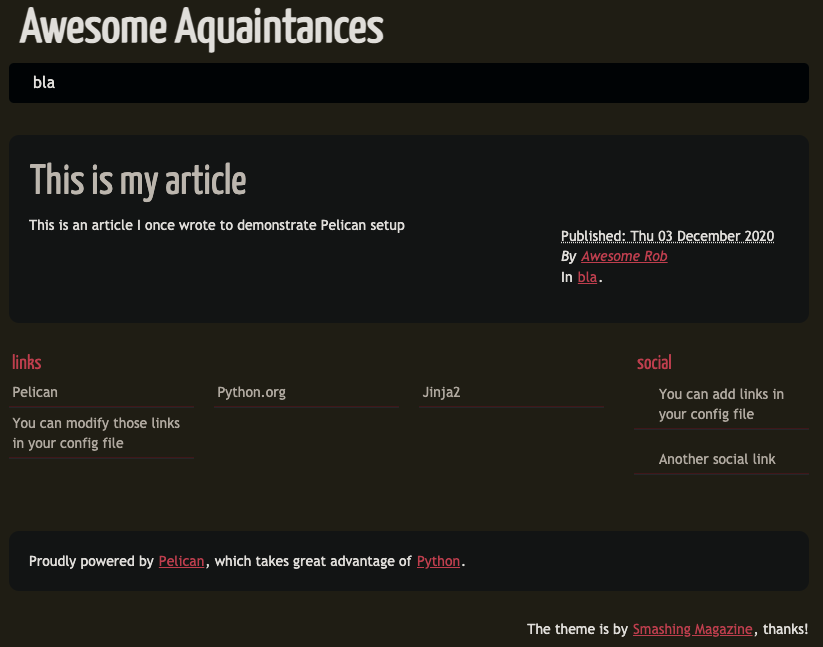

Setting up a blog with Pelican and Github Pages
This is about how this blog was setup using Pelican and Github Pages. I anticipate refining this process so will keep this page updated with any future improvements.
About the tech choice:
Why Github Pages?
- it's free
- content is all mine
- I already use Github for most of my projects (including the ones I get paid for)
- one can tinker with the HTML, CSS and JavaScript
Why Pelican?
If you follow the tutorial on setting up Github Pages you'll notice that the recommended site generation tool is Jekyll.
Jekyll is a nice option, easy to setup quickly and with a ton of nice template options. But it's written in Ruby (by Tom Preston-Werner, cofounder of Github no less) and since I work primarily in Python, I thought to check for a Python option, which led me to Pelican.
Like Jekyll, Pelican allows one to create articles in Markdown and I love Markdown (light, renders beautifully, perfect for version control)
Some other notable features: - a bunch of theme options (with Jinja customization options) - a bunch of plugin options
Initial Setup
Setup is fairly simple:
- create your Python environment (I use pyenv-virtualenv)
- install a package
pip install pelican[markdown]*
Quick Start
Run pelican-quickstart which will take you through a list of questions to determine your setup requirements and then generate your project
My answers looked something like this:
> Where do you want to create your new web site? [.]
> What will be the title of this web site? Awesome Aquaintances
> Who will be the author of this web site? Awesome Rob
> What will be the default language of this web site? [en]
> Do you want to specify a URL prefix? e.g., https://example.com (Y/n) n
> Do you want to enable article pagination? (Y/n) n
> What is your time zone? [Europe/Paris]
> Do you want to generate a tasks.py/Makefile to automate generation and publishing? (Y/n) Y
> Do you want to upload your website using FTP? (y/N) N
> Do you want to upload your website using SSH? (y/N) N
> Do you want to upload your website using Dropbox? (y/N) N
> Do you want to upload your website using S3? (y/N) N
> Do you want to upload your website using Rackspace Cloud Files? (y/N) N
> Do you want to upload your website using GitHub Pages? (y/N) y
> Is this your personal page (username.github.io)? (y/N) y
The resulting files:
.
├── Makefile
├── content
├── output
├── pelicanconf.py
├── publishconf.py
└── tasks.py
Add a file article.md to the folder content containing the following:
Title: This is my article
Date: 2020-12-03 10:20
Category: bla
Summary: This is an article about Pelican
This is an article I once wrote to demonstrate Pelican setup
To generate some HTML run make html and check the contents of the output folder.
To serve your site run make devserver and navigate to the listed URL in your browser (standard is http://127.0.0.1:8000). You should see something like this:

It's probably not surprising to know that Pelican has some Quickstart instructions. There are also some community supported Tutorials. They're worth looking at.
What's happening?
In the output folder you should see the file this-is-my-article.html which is the file generated from the contents of article.md. As you can see in the HTML file, the article has been wrapped with additional styled HTML which is determined by the theme choice.
Compare what you see in the display page with the contents of pelicanconf.py and it should be evident how to change what is displayed in the links and social sections.
You will likely see warnings about a missing path and favicon, I'll cover this later
The make html builds your site. The make devserver builds your site and hosts it and refreshes if you make changes.
The theme tune
At this point you could already publish your site but it's highly likely you'll want to integrate some themes. The themes can be seen in all their glory here. This is the part that I got a bit lost and ended up hard-coding a solution:
-
Clone the pelican-themes repo by running this in the root of your project:
git clone --recursive https://github.com/getpelican/pelican-themes themes -
In the
pelicanconf.pyfile add:THEME = 'themes/[Name of a theme that looks good]' -
Run
make devserver. -
Mess around with different themes until you find the perfect one.
-
Copy that theme into a folder
themeand change theTHEMEvariable to reference it.
The non hard-coding option
Okay, so there is a pelican-themes CLI which allows you to install different themes and one can then specify the theme path using pelican -t THEME. But since I want to tinker I went with my option. Do as you feel led 😉
More themes
Different themes have different consequences for the rendering of your site. Each one usually includes a README.md and I would recommend reading it to ensure optimal configuration.
Other bits
Here are some other configuration changes I made:
-
added an
imagesfolder tocontent-> this will remove thepath does not existwarning -
add a
favicon.icofile in thecontent/imagesfolder will ensure it's available in theoutputfolder but linking to it is dependent on the theme. For some one can add a reference to it in thepelicanconf.pyfile. -
to ensure correct relative URLs for local development, I had to specify the following in
pelicanconf.py:SITEURL = 'http://127.0.0.1:8000' -
What I haven't really covered here is the structuring of your files in content and things like the use of tags and categories. I advise reading up on these in the documentation
-
You can mark an article as draft by adding:
Status: draftin the header. This will ensure that it's not displayed on the main page but can be reviewed by another person. More info can be found here
Publishing
Once you have the look you want, you'll want to publish. This turned out to be a bit fiddly for me as I am maintaining the code in a repository separate from the one configured for Github pages.
Before launching into this, make sure to adjust the
SITEURLvalue in thepublishconf.pyto ensure your HTML isn't littered with 127.0.0.1:8000
There is a section in the Pelican documentation focussed specifically on publishing to Github (in this context we're talking about User Pages and not Project Pages). There's an explanation on how to publish to the root of the same repo if that's what you'd prefer to do.
But this is what I did:
pip install ghp-import(ghp-importcopies a folder to a branch, more here)- Run
ghp-import output -b gh-pages - Run
git push [your repo's SSH address] gh-pages:master
I then ran into issues because my gh-pages branch was out of sync with the master branch of my repo. To remedy that I ran the following:
# check out the gh-pages branch
git checkout -b gh-pages
# add the remote repo and update (fill in your repo details)
git remote add <repo-name> git@github.com:xxx/<repo-name>.git
git remote update
# merge master with gh-pages
git merge --allow-unrelated-histories <repo-name>/master
And then reran the push.
Makefile magic
And then lastly, I made some adjustments to the Makefile so that I could publish with just a make github:
# fill in your repo details
BLOG_REPO=git@github.com:xxx/<repo-name>.git
GITHUB_PAGES_BRANCH=gh-pages
github: publish
ghp-import "$(OUTPUTDIR)" -b $(GITHUB_PAGES_BRANCH)
git push $(BLOG_REPO) $(GITHUB_PAGES_BRANCH):master
Final thoughs and improvements
This still feels a bit janky and I will endeavour to tighten it up in the future.
There are a fair amount of other improvements I'd like to make, namely:
- tree shaking of fontawesome because it's so beeg
- integration of Github issues for comments using utterances
- integrate plausible.io for web analytics (privacy friendly compared to Google analytics)
- figure out how to integrate remark presentations
- GPT-3 automated blogging for when I'm feeling lazy